Data residency
in Vietnam
Store data in GreenNode data centers across Hanoi (HAN-01, HAN-02) and Ho Chi Minh City (HCM-01, HCM-02, HCM-03), within the agreed geographic boundary.
Keep your global stack.
Bring the data that matters home.
Data residency
in Vietnam
Store data in GreenNode data centers across Hanoi (HAN-01, HAN-02) and Ho Chi Minh City (HCM-01, HCM-02, HCM-03), within the agreed geographic boundary.
Legal jurisdiction
in Vietnam
GreenNode, a member of VNG Group, is a Vietnam-based legal entity. Its domestic infrastructure is governed solely by Vietnamese law.
Operations
in Vietnam
Serving more than 1,000 enterprises in Vietnam across the BFSI, retail, and technology sectors, with a 24/7 technical support team based in Vietnam.
Enterprise-controlled
access
Enterprises retain control over configurations, permissions, and operations through a private self-service console, with transparent resource monitoring and access logs.
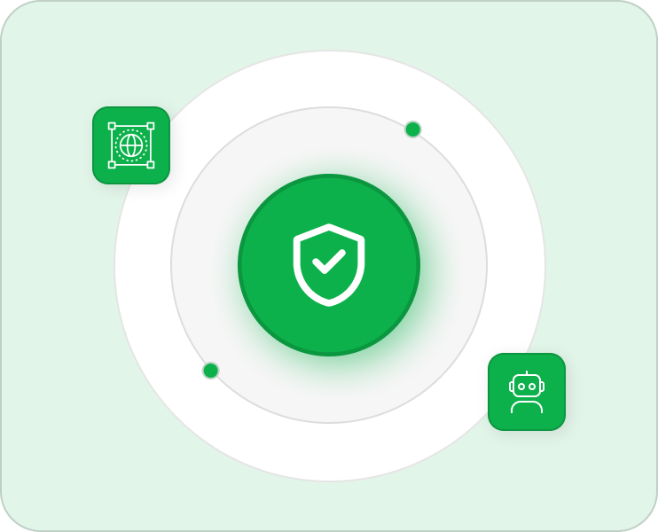
Segment workloads using VPCs and subnets, with private connectivity via Private Endpoints, site-to-site VPN, or Interconnect. Run AI agents in private mode to reduce public-internet exposure.
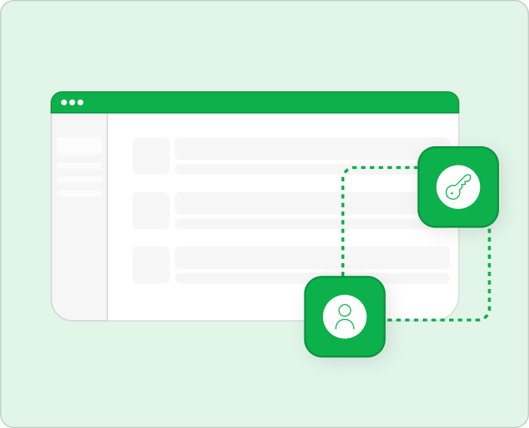
Manage identities and granular permissions by user, team, or system. Configure and monitor services through GreenNode Portal, vMonitor, and Global View.
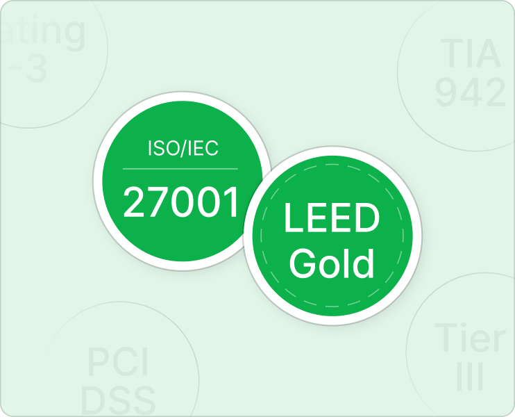
Infrastructure is aligned with ISO/IEC 27001, 27017, 27018, and PCI DSS. Data centers meet Tier III, TIA-942 Rated-3, and LEED Gold standards.
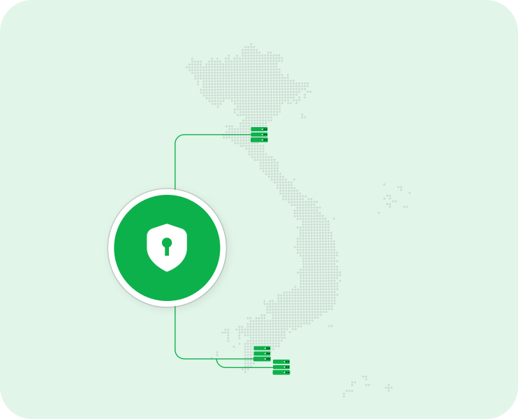
Run model training and fine-tuning on GPU infrastructure in Vietnam. Training data, checkpoints, and training logs are stored on in-country storage services.
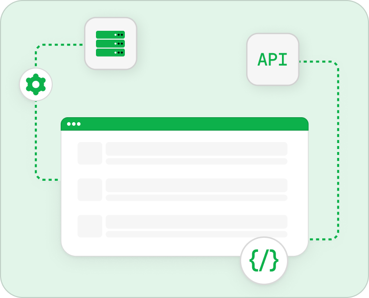
Manage model versions, configurations, and metadata through the Model Registry. Deploy models as REST API endpoints with autoscaling and private access.
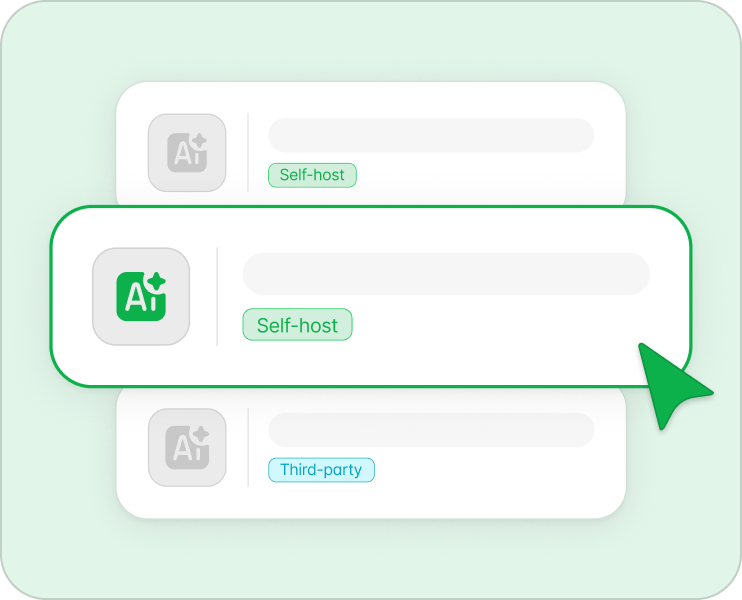
Self-host open-source models on GreenNode GPUs to keep data in Vietnam, or access third-party models through MaaS. AI Gateway centralizes calls with request-level metrics and logs.
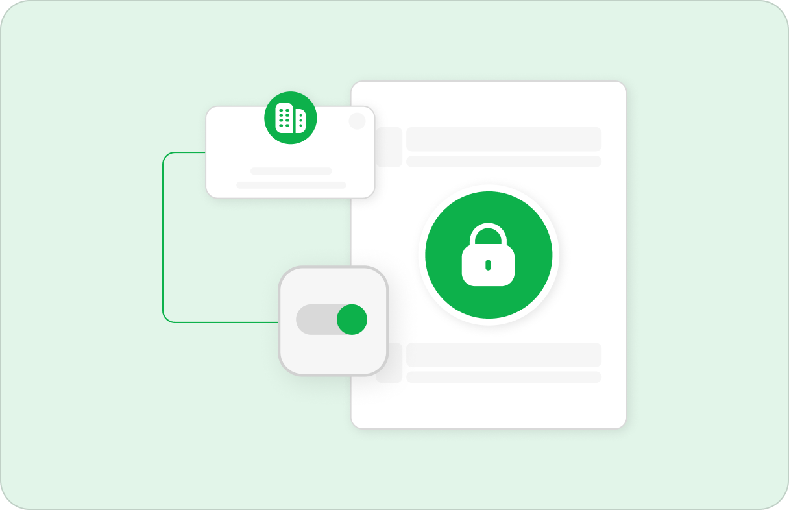
Create keys in GreenNode KMS or use BYOK. Clients can enable, disable, revoke, or delete keys for volumes, snapshots, and backups.
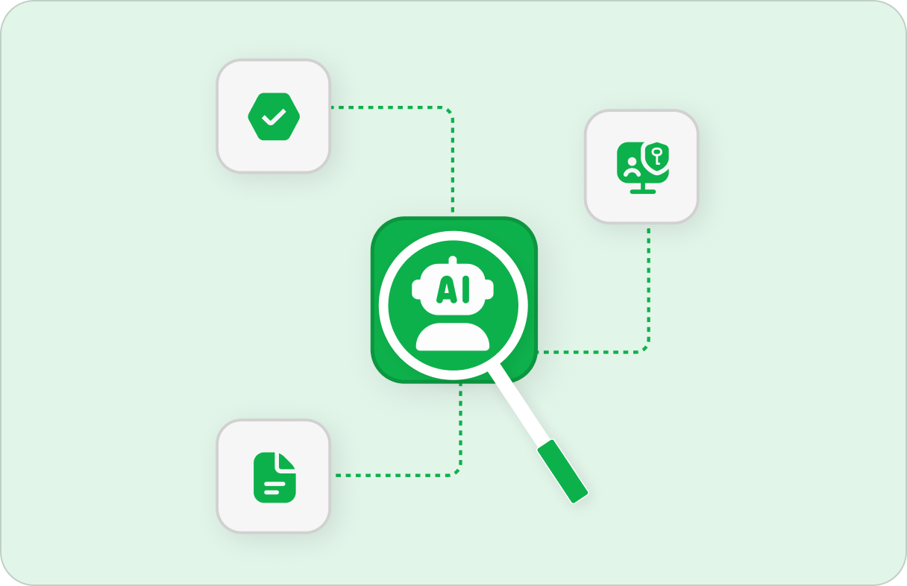
Govern AI-agent calls to internal systems with centralized authentication, authorization, and logging for audit and incident investigation.
Deploy Object Storage in Ho Chi Minh City or Hanoi; provision File and Block Storage by Availability Zone; store shared AI data on AI Platform Network Volume.
Run workloads in HCM (HCM-1A, HCM-1B, HCM-1C) or Hanoi (HAN-1A). Keep workloads and data in Vietnam, with multi-AZ deployment for higher resilience.
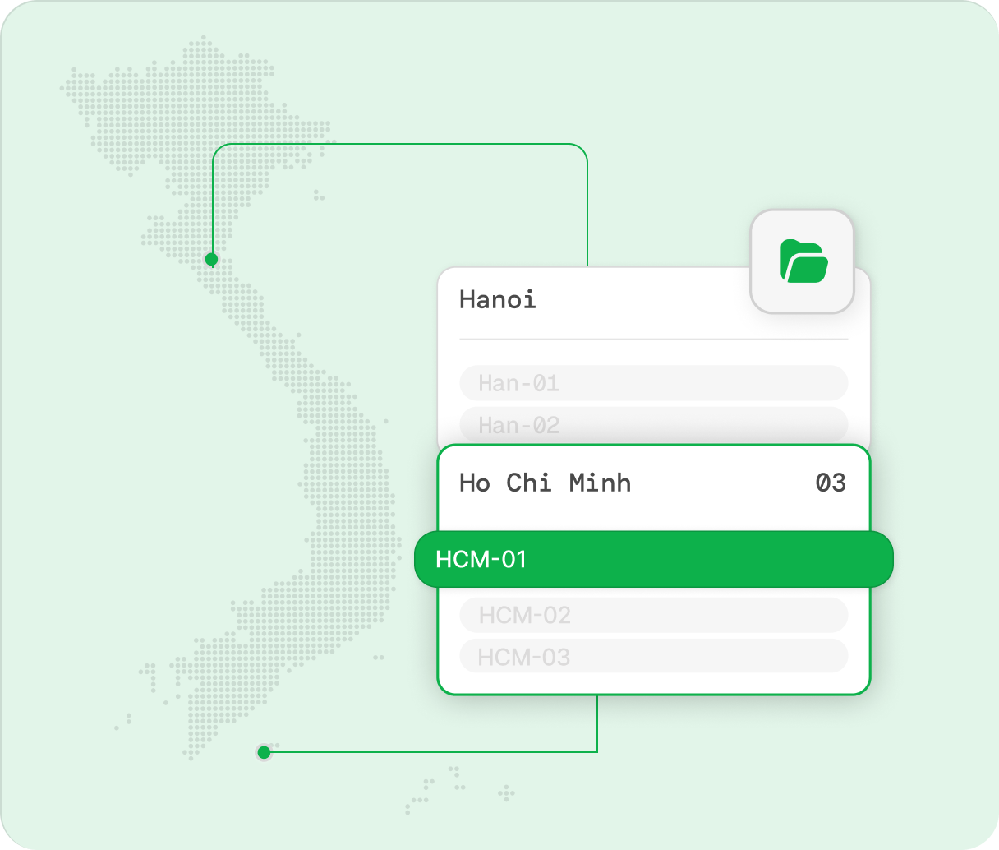
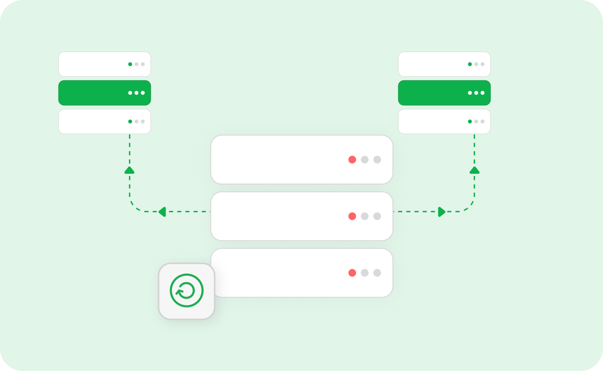
Replicate data to standby servers, with failover, failover testing, and point-in-time recovery.
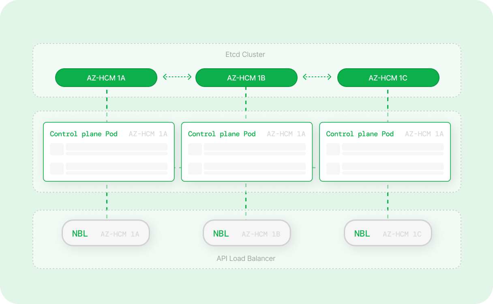
Distribute traffic across regions and isolate affected zones automatically. Use Backup Center and vDRC for cross-region backup, replication, and recovery.
SOC 2 Type II
ISO/IEC 27001
ISO/IEC 27017 & ISO/IEC 27018
Uptime Institute Tier III
PCI DSS
TVRA